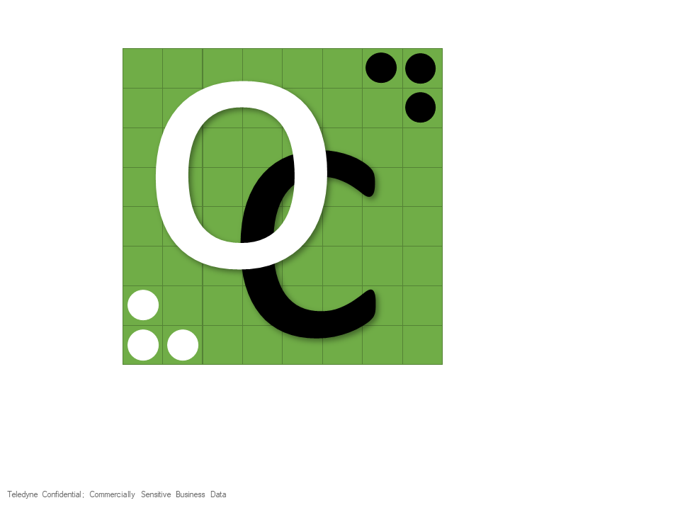

About this engine

This opponent is a from-scratch Othello engine written in C and compiled to WebAssembly. It plays using classical game-tree search — no machine learning, no neural networks, no training data.
How it thinks
- Bitboards — the position is two 64-bit integers; moves and flips are computed with branchless Kogge-Stone bit tricks.
- Principal Variation Search (alpha-beta with null-window scouting) plus a transposition table and move ordering.
- Iterative deepening with a time budget, so it stays responsive — the difficulty setting simply gives it more thinking time.
- An exact endgame solver that plays the last several moves perfectly.
- A hand-crafted, phase-blended evaluation — mobility, corners, edge stability, and disc count, weighted differently from the opening to the endgame.
Runs anywhere
The whole engine is an ~8 KB WebAssembly module that runs in a background Web Worker, so it works offline on a modest phone or tablet without ever blocking the page.